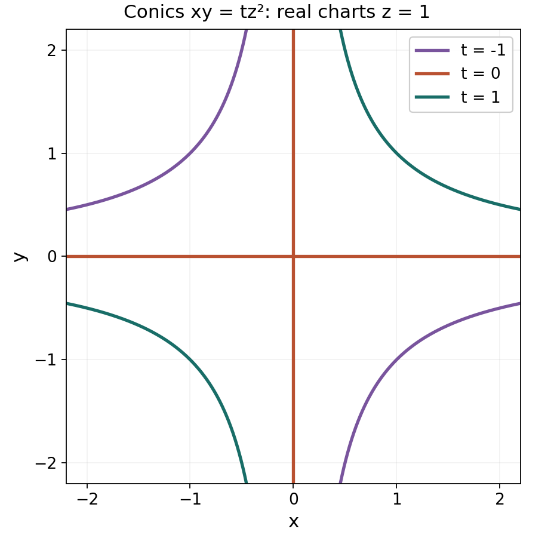

Euler characteristics and Hilbert polynomials
Written by GPT-6.1 Sol (OpenAI), in Codex, at Ultra effort, October 2026. Self-checked by the writing AI, GPT-6.1 Sol, at Ultra effort. Public domain (CC0).
Individual cohomology groups can jump in a family. Their alternating sum is more stable. Twisting a coherent sheaf by powers of a line bundle turns this sum into a polynomial, and an ample line bundle makes its degree detect the dimension of the support. Flatness then preserves the polynomial through degenerations, including the small embedded pieces that a picture of the underlying curve can miss.
We use proper coherent direct images, including coherent filtrations and extension of morphisms from an open set, and Serre's theorems. The planned lessons Tor and flat modules and Graded modules and Hilbert–Samuel functions, in Commutative algebra for geometry, supply the module criteria for flatness and eventual graded Hilbert functions. We also use that course's Krull dimension and Noether normalization: a finite type domain over a field has the same dimension at every closed point [Stacks, Tag 00OS]. For a nonzerodivisor in the maximal ideal of a Noetherian local ring, quotienting lowers dimension by one [Tag 00KW]. These are dimension-theoretic prerequisites, distinct from the cohomological polynomial theorems proved here.
1. The finite alternating sum
Let \(X\) be proper over a field \(k\), and \(F\) coherent. Its cohomology groups are finite-dimensional by the preceding lesson. They vanish in sufficiently high degree: a finite affine cover has affine intersections, because \(X\) is separated, and its finite ordered Čech complex computes cohomology. Define
\[ \chi(X,F)=\sum_{q\geq0}(-1)^q\dim_k H^q(X,F). \]Both finiteness statements matter. A formal alternating sum of infinite-dimensional spaces would not have this meaning. We write \(\chi(F)\) when the scheme and base field are understood.
Proposition 1.1 (additivity). For a short exact sequence of coherent sheaves on a proper \(k\)-scheme,
\[ 0\longrightarrow F'\longrightarrow F\longrightarrow F''\longrightarrow0, \qquad \chi(F)=\chi(F')+\chi(F''). \]Proof. The associated long exact cohomology sequence is finite after its trailing zero terms are removed. In any finite exact sequence of finite-dimensional vector spaces, write each space's dimension as the dimension of the incoming image plus that of the outgoing image. The alternating sum cancels these image dimensions in pairs. Applied to the cohomology sequence, this is exactly the asserted identity. The same argument, or successive short exact sequences at the kernels, gives the alternating formula for any finite exact sequence. \(\square\)
Proposition 1.2 (proper pushforward). If \(f:Y\to X\) is a \(k\)-morphism between proper \(k\)-schemes and \(G\) is coherent on \(Y\), then
\[ \chi(Y,G)=\sum_{q\geq0}(-1)^q\chi(X,R^qf_*G). \]Proof. The morphism \(f\) is proper: its graph is closed in \(Y\times_k X\), since \(X\) is separated, and the projection to \(X\) is the base change of the proper map \(Y\to\operatorname{Spec}k\). Thus its higher direct images are coherent. Only finitely many are nonzero. Indeed, cover \(X\) by finitely many affines, cover each inverse image by finitely many affines, and take the maximum of their finite Čech bounds. Localization of cohomology identifies these computations with the restrictions of \(R^qf_*G\).
Leray gives a bounded spectral sequence of finite-dimensional vector spaces
\[ E_2^{p,q}=H^p(X,R^qf_*G)\Longrightarrow H^{p+q}(Y,G). \]On each page, the differential raises total degree by one. Passing to its cohomology preserves the alternating sum in total degree, by the same image cancellation as in Proposition 1.1. On the limiting page, the terms of total degree \(n\) are the graded pieces of a finite filtration of \(H^n(Y,G)\), whose dimensions sum to its dimension. Therefore the alternating sum on the second page equals \(\chi(Y,G)\). Grouping that page by \(q\) proves the formula. \(\square\)
For later use, field extension preserves these numbers. A finite affine-cover complex for \(F\) tensors term by term with any extension \(K/k\) to become the complex for \(F_K\) on \(X_K\). Since \(K\) is flat,
\[ H^q(X_K,F_K)\cong H^q(X,F)\otimes_k K, \qquad \chi(X_K,F_K)=\chi(X,F). \]This argument concerns flat extension of the field; an arbitrary change of the parameter ring will require the flatness argument in Section 4.
2. Why twisting gives a polynomial
A numerical polynomial is a polynomial in \(\mathbf Q[T]\) taking integer values at all integers. Rational coefficients are necessary: \(\binom{T+2}{2}\) is integer-valued without lying in \(\mathbf Z[T]\). If a function \(a:\mathbf Z\to\mathbf Z\) has first difference \(a(n+1)-a(n)\) given by a polynomial of degree at most \(d-1\), then \(a\) is given by a numerical polynomial of degree at most \(d\). To see this, expand the difference in the basis \(\binom{T}{j}\), use
\[ \binom{T+1}{j+1}-\binom{T}{j+1}=\binom{T}{j}, \]and choose the integration constant to match \(a(0)\). Equality follows forward and backward from the difference equation. Integer values of the resulting polynomial follow from its equality with \(a\), including at negative integers.
Theorem 2.1 (polynomial Euler characteristic). Let \(X\) be proper over \(k\), \(L\) invertible, and \(F\) coherent. There is a unique numerical polynomial \(P_{F,L}\) such that
\[ P_{F,L}(n)=\chi(X,F\otimes L^n)\quad(n\in\mathbf Z). \]For \(F\ne0\), its degree is at most \(\dim\operatorname{Supp}F\). For \(F=0\), it is the zero polynomial.
Proof. Uniqueness follows because a nonzero polynomial has only finitely many roots. We prove existence and the degree bound by induction on support dimension. If the support has dimension zero, \(F\) is a sheaf on the closed scheme defined by its annihilator, which is zero-dimensional and of finite type over \(k\). This scheme is finite over \(k\): its finitely many points are open, each local ring is Artinian, its residue field is finite over \(k\), and its finite nilpotent filtration makes the ring finite-dimensional over \(k\). Equivalently this is the zero-dimensional case of Noether normalization. Every invertible module on each of these local Artinian rings is free of rank one. Thus twisting preserves the dimension of global sections, and higher cohomology is zero. The polynomial is constant.
Now use the coherent filtration from the preceding lesson. Its factors are \(i_*I\), where \(i:V\hookrightarrow X\) is integral and closed and \(I\subset\mathcal O_V\) is a nonzero coherent ideal. Twisting is exact, closed pushforward preserves cohomology, and Euler characteristic is additive. It suffices to prove the assertion for \(I\) on \(V\), whose dimension does not exceed that of the original support.
At the generic point of \(V\), choose a nonzero isomorphism between the one-dimensional vector spaces \(I_\eta\) and \((I\otimes L)_\eta\). It defines an isomorphism on some dense open \(U\). Let \(J\) be the ideal of its closed complement. The extension lemma of the preceding lesson extends this map to
\[ E=J^aI\longrightarrow I\otimes L \]for some \(a\). There is also the inclusion \(E\hookrightarrow I\). Both maps are injective. For the extended map, its kernel is generically zero and is a subsheaf of the ideal \(E\) on an integral scheme; on an affine chart it is a torsion submodule of a submodule of a domain, hence zero. Both cokernels \(Q,Q'\) have proper closed support in \(V\), and consequently support dimension at most \(\dim V-1\). We have
\[ 0\to E\to I\to Q\to0, \qquad 0\to E\to I\otimes L\to Q'\to0. \]After tensoring with \(L^n\) and subtracting their Euler identities,
\[ \chi(I\otimes L^{n+1})-\chi(I\otimes L^n) =\chi(Q'\otimes L^n)-\chi(Q\otimes L^n). \]The right side is a polynomial of degree at most \(\dim V-1\) by induction. The difference argument above completes the proof, and additivity reassembles the filtration. \(\square\)
This proof uses all integer twists. Eventual agreement with a polynomial would be weaker. It also explains why ampleness is absent from existence: two lattices inside a common generic line produce a difference supported in smaller dimension. For the trivial line bundle on a positive-dimensional proper scheme, the function is constant, so degree equality cannot hold for arbitrary \(L\).
3. Ampleness detects support dimension
Theorem 3.1 (degree and positive leading coefficient). If \(L\) is ample and \(F\ne0\), then
\[ \deg P_{F,L}=\dim\operatorname{Supp}F, \]and the leading coefficient is positive. This holds over every field.
Proof. A positive power \(L^b\) is very ample on the proper scheme, by the ample embedding prerequisite used in Serre's theorems. Since \(P_{F,L^b}(n)=P_{F,L}(bn)\), it is enough to prove the assertion for a very ample bundle, whose restrictions to closed subschemes are again very ample.
Induct on \(d=\dim\operatorname{Supp}F\). In dimension zero the proof of Theorem 2.1 gives a positive constant: a nonzero module on a finite affine scheme has nonzero global sections. For \(d>0\), first consider \(F=\mathcal O_V\) with \(V\) integral of dimension \(d\). Embed \(V\) in a finite projective space using \(L\). Choose a coordinate section \(s\) that is nonzero on \(V\), and let \(D\) be its zero scheme. It is nonempty. Otherwise \(V\) would be contained in the affine coordinate chart and would itself be affine; its coordinate ring would be finite-dimensional by proper cohomology finiteness, forcing \(\dim V=0\).
The section is regular on the integral scheme. Its vanishing support is a proper closed subset, so has dimension at most \(d-1\). Choose a closed point \(x\in D\). On an affine neighborhood in \(V\), the local ring at \(x\) has dimension \(d\) by the finite-type dimension theorem [Stacks, Tag 00OS]. The section is a nonzero element of its maximal ideal after trivializing \(L\); the one-equation theorem [Tag 00KW] gives dimension \(d-1\) for its quotient. Hence \(D\) has dimension exactly \(d-1\). The regular multiplication sequence gives
\[ 0\to L^{n-1}\xrightarrow{s}L^n\to L^n|_D\to0, \qquad P_{\mathcal O_V,L}(n)-P_{\mathcal O_V,L}(n-1)=P_{\mathcal O_D,L|_D}(n). \]By induction the last polynomial has degree \(d-1\) and positive leading coefficient \(c\). The first polynomial therefore has degree \(d\) and leading coefficient \(c/d>0\).
For a nonzero ideal \(I\subset\mathcal O_V\), the quotient \(\mathcal O_V/I\) has smaller-dimensional support. Additivity and Theorem 2.1 show that \(P_I\) has the same top term as \(P_{\mathcal O_V}\). Finally filter an arbitrary \(F\) into ideal factors on integral closed subschemes as before. Their supports have union \(\operatorname{Supp}F\), so at least one has dimension \(d\). Every factor of dimension \(d\) has positive leading coefficient, and all other factors contribute lower-degree polynomials. Their sum has positive coefficient in degree \(d\). This proves the assertion. No extension to an infinite field was needed. \(\square\)
On \(\mathbf P^N_k\) with \(L=\mathcal O(1)\), write \(P_F=P_{F,L}\) and call it the Hilbert polynomial. Serre vanishing gives
\[ P_F(n)=\dim_k H^0(\mathbf P^N_k,F(n))\quad(n\gg0). \]The finitely generated graded module
\[ \Gamma_{\geq0}(F)=\bigoplus_{n\geq0}H^0(\mathbf P^N_k,F(n)) \]therefore has graded Hilbert polynomial \(P_F\), in the convention of Graded modules and Hilbert–Samuel functions. A negative-degree truncation changes no eventual graded Hilbert function. If \(F=\widetilde M\) for a finite graded module \(M\), the tail-recovery theorem in Serre's lesson identifies \(M_n\) with \(H^0(F(n))\) for sufficiently large \(n\), so its Hilbert polynomial is the same. None of these assertions identifies the low-degree Hilbert function with \(P_F\).
The argument also gives the familiar multiplicity description. If \(d=\dim\operatorname{Supp}F\), its degree-\(d\) coefficient is
\[ \sum_{\dim V_i=d}\ell_{\mathcal O_{X,\eta_i}}(F_{\eta_i})\, [n^d]P_{\mathcal O_{V_i},L}(n). \]Indeed localizing the coherent filtration at each generic point counts its ideal factors as length-one residue-field factors; smaller supports disappear. All generic lengths here are finite. Thus embedded components of smaller dimension cannot alter the top term, though they can alter lower terms.
4. Flat projective families
Let \(S\) be Noetherian, \(X\hookrightarrow\mathbf P^N_S\) closed, and \(F\) coherent on \(X\) and flat over \(S\). Write \(F_s\) for its pullback to the fiber over \(s\), and use the restricted \(\mathcal O(1)\) for its Hilbert polynomial.
Lemma 4.1 (the high-twist flat complex). Locally on \(S\), there is an integer \(m_0\) such that for every \(m\geq m_0\), the module \(H^0(X,F(m))\) is finite locally free and commutes with every base change. All higher cohomology of these twists is zero after every base change.
Proof. Work over \(S=\operatorname{Spec}A\). Push \(F\) to projective space, and form its finite ordered Čech complex \(C^\bullet(m)\) on the \(N+1\) standard affine charts. This pushforward is still flat over \(A\): its stalks on \(X\) are the original stalks, and its other stalks are zero. On any affine intersection, the section module is \(A\)-flat. In detail, tensor an injection of \(A\)-modules with the sheaf. Stalkwise flatness preserves injectivity; taking sections on the affine preserves this exact sequence of quasi-coherent sheaves. This is precisely the module criterion for flatness. Thus all terms of \(C^\bullet(m)\) are flat, although they need not be finite over \(A\).
Relative Serre vanishing supplies \(m_0\) with \(H^q(C^\bullet(m))=0\) for \(q>0\) and \(m\geq m_0\). The degree-zero cohomology is finite by projective finiteness. A bounded complex of flat modules concentrated in nonnegative degrees and exact in positive degrees has flat degree-zero cohomology, and remains exact in positive degrees after tensoring with any module. Here is the needed argument. At the last degree \(r\), the map \(C^{r-1}\to C^r\) is surjective. Its kernel is flat, since both the middle and quotient modules are flat. Moving downward, put \(Z^q=\ker(C^q\to C^{q+1})\). Exactness gives surjections \(C^{q-1}\to Z^q\), and the sequences
\[ 0\to Z^{q-1}\to C^{q-1}\to Z^q\to0 \]show inductively that every \(Z^q\), including \(Z^0=H^0\), is flat. A short exact sequence with flat quotient remains exact under every tensor product, so these same sequences prove the claimed tensor assertion. The case of a complex with only \(C^0\) is immediate.
A finite module over Noetherian \(A\) is finitely presented, and a finitely presented flat module is locally free, by Tor and flat modules. For an \(A\)-algebra \(B\), the base-changed standard cover has section complex \(C^\bullet(m)\otimes_A B\), by the affine module/sheaf correspondence. The tensor assertion therefore proves
\[ H^0(X,F(m))\otimes_A B\cong H^0(X_B,F_B(m)), \qquad H^q(X_B,F_B(m))=0\ (q>0). \]These identities localize on an arbitrary base change, proving the lemma. \(\square\)
Theorem 4.2 (constancy in a flat projective family). The function \(s\mapsto P_{F_s}\in\mathbf Q[T]\) is locally constant.
Proof. Over the affine neighborhood above, choose the \(N+1\) consecutive integers \(m_0,\ldots,m_0+N\). Lemma 4.1 identifies the value of the fiber polynomial at each of them with the rank of a finite locally free module at \(s\). These finitely many rank functions are locally constant. Every fiber polynomial has degree at most \(N\), by Theorem 2.1, so its values at these \(N+1\) distinct integers determine it by polynomial interpolation. Intersecting the finitely many neighborhoods on which the ranks are constant proves local constancy of the whole polynomial. In particular \(\chi(X_s,F_s)=P_{F_s}(0)\) is locally constant. \(\square\)
The Čech terms in this proof can be infinite modules. Their flatness, boundedness and high-twist exactness suffice; replacing them by finite modules without construction would leave a gap. A finite complex controlling all twists and all cohomological degrees is developed in the next lesson.
5. Curves and a conic degeneration
For a nonzero homogeneous equation \(f\) of degree \(e\geq1\), the plane curve \(C=V(f)\subset\mathbf P^2_k\) has
\[ 0\to\mathcal O(n-e)\xrightarrow{f}\mathcal O(n)\to\mathcal O_C(n)\to0. \]The projective-space calculation gives \(\chi(\mathcal O(n))=\binom{n+2}{2}\) for every integer \(n\), using the polynomial meaning of the binomial coefficient. Thus
\[ P_C(n)=\binom{n+2}{2}-\binom{n-e+2}{2} =en-\frac{e(e-3)}2. \]We use the arithmetic genus convention \(p_a(C)=1-\chi(C,\mathcal O_C)\), so \(p_a(C)=(e-1)(e-2)/2\). Smoothness and irreducibility are unnecessary for this calculation. For a smooth geometrically connected curve it agrees with the dimension of \(H^1(\mathcal O_C)\); for disconnected or nonreduced curves the Euler definition remains the convention.
The cubic Veronese embedding of \(\mathbf P^1\) gives a twisted cubic \(T\subset\mathbf P^3\), with \(\mathcal O_T(1)\cong\mathcal O_{\mathbf P^1}(3)\). Consequently \(P_T(n)=3n+1\). Two skew lines are a disjoint union of two copies of \(\mathbf P^1\), each of degree one, and have polynomial \(2n+2\). Two intersecting reduced lines instead have \(2n+1\): the exact sequence gluing their functions subtracts the one-dimensional intersection point. Their support pictures alone do not specify the constant term.
Consider over \(A=k[t]\) the homogeneous algebra
\[ B=A[x,y,z]/(xy-tz^2),\qquad \mathcal C=\operatorname{Proj}B. \]It is flat over \(A\). Order monomials lexicographically with \(x>y>z\). The relation is monic with leading monomial \(xy\); division leaves a unique \(A\)-linear combination of monomials not divisible by \(xy\). Uniqueness follows since a nonzero multiple of the relation has leading monomial divisible by \(xy\). Thus \(B\) is free over \(A\). Its homogeneous localizations are flat, and their degree-zero summands are flat, so the affine charts of \(\mathcal C\) are flat as well. Every fiber is a plane conic and has \(2n+1\), including the special fiber \(xy=0\), the two intersecting lines. The total family preserves the scheme structure at their intersection.

Figure 1. The real charts z=1 of xy=tz², in the window \(-2.2\le x,y\le2.2\). The red fiber t=0 consists of the two coordinate axes. Points at infinity are omitted; this drawing shows the real support, while the equations and flatness proof specify the scheme. Every projective fiber has Hilbert polynomial 2n+1.
6. Exercises with solutions
Exercise 6.1 (easy: plane curves). Compute the polynomial and arithmetic genus of a plane curve of degree \(e\), and decide whether a plane cubic can be a flat limit of twisted cubics as a reduced subscheme of \(\mathbf P^3\).
Solution. The hypersurface sequence gives \(P(n)=en-e(e-3)/2\) and \(p_a=(e-1)(e-2)/2\). A plane cubic has \(3n\), whereas a twisted cubic has \(3n+1\). Theorem 4.2 excludes a flat family with precisely these two fibers. It leaves open a limit whose underlying curve is a plane cubic and whose structure sheaf has an additional length-one contribution; Exercise 6.5 constructs it.
Exercise 6.2 (easy: polynomial additivity). Given \(0\to F'\to F\to F''\to0\) on a proper scheme with a fixed invertible \(L\), prove additivity of \(\chi\) and of \(P_{F,L}\). Does support dimension itself add?
Solution. The finite long cohomology sequence proves Euler additivity. Tensoring by each \(L^n\) preserves exactness, so the three polynomial values satisfy additivity at every integer; polynomial uniqueness gives \(P_F=P_{F'}+P_{F''}\). Supports satisfy \(\operatorname{Supp}F=\operatorname{Supp}F'\cup\operatorname{Supp}F''\), so their dimensions take the maximum, rather than the sum. For ample \(L\), positivity of leading coefficients makes this maximum consistent with the polynomial degree.
Exercise 6.3 (medium: cubic and skew lines). Compute the Hilbert polynomials of a twisted cubic and of two skew lines directly from their parametrizations and components.
Solution. The complete degree-three linear system on \(\mathbf P^1\) gives \([s:u]\mapsto[s^3:s^2u:su^2:u^3]\). On the first chart the ratios are \(1,a,a^2,a^3\), and on the last they are \(b^3,b^2,b,1\); these recover the two affine charts of \(\mathbf P^1\). The pulled-back twist is \(\mathcal O(3)\), so projective-line cohomology gives \(\chi(\mathcal O(3n))=3n+1\) for every integer \(n\). Skew lines are disjoint and their function sheaf is the direct sum of the two component pushforwards, each with polynomial \(n+1\). Their sum is \(2n+2\).
Exercise 6.4 (medium: conic fibers). Verify flatness and the fiber polynomial for \(xy=tz^2\), including \(t=0\).
Solution. The monic relation gives the free standard-monomial basis of Section 5, proving flatness on the projective charts. Its degree-\(n\) basis, for \(n\geq0\), consists of \(x^az^{n-a}\), \(0\leq a\leq n\), and \(y^bz^{n-b}\), \(1\leq b\leq n\). It has \(2n+1\) elements independently of \(t\). The hypersurface Euler calculation agrees with this eventual Hilbert function. At \(t=0\), the two lines meet at one point, so their Euler polynomials add as \((n+1)+(n+1)-1=2n+1\).
Exercise 6.5 (hard: the embedded point in a cubic limit). In \(k[t,X,Y,Z,W]\), all four projective variables having degree one and \(t\) degree zero, put
\[ \begin{aligned} g_1&=XW-tY^2,&g_2&=YW+tX^2-tYZ,\\ g_3&=W^2-tWZ+t^2XY,&g_4&=X^3+Y^3-XYZ. \end{aligned} \]Show that the projective family defined by these equations is flat, its nonzero fibers are twisted cubics, and its zero fiber has a nodal plane cubic and a length-one embedded point.
Solution. Use lexicographic order \(W>X>Y>Z\), treating \(k[t]\) as the coefficient ring. The leading monomials are \(XW,YW,W^2,X^3\), all with coefficient one. These polynomials form a monic Gröbner basis over this ring. The pairs with relatively prime leading monomials reduce to zero by the product criterion; the four remaining pairs reduce by the first four identities below, in which each right-hand product has leading monomial strictly below the corresponding common multiple:
\[ \begin{aligned} Yg_1-Xg_2&=-t g_4,\\ Wg_1-Xg_3&=-tYg_2+tZg_1,\\ Wg_2-Yg_3&=tXg_1,\\ X^2g_1-Wg_4&=-Y^2g_2+YZg_1,\\ X^3g_3-W^2g_4&=(XYZ-Y^3)g_3-tWZg_4+t^2XYg_4. \end{aligned} \]The last pair also has relatively prime leading monomials, but its displayed reduction checks it explicitly. The only other pair, \(g_2,g_4\), is relatively prime. To justify the basis criterion, choose an expression of an ideal element with smallest possible maximal leading monomial. If leading terms cancel, the corresponding pair identity replaces that cancellation by terms with smaller leading monomials; pairs with relatively prime leading monomials have the elementary product reduction. Thus a nonzero ideal element has leading monomial divisible by one of the four displayed leading monomials. Division then gives existence and uniqueness of a remainder outside that monomial ideal. Monic division therefore makes the monomials outside \((XW,YW,W^2,X^3)\) a free \(k[t]\)-basis of the quotient. This proves flatness of the homogeneous algebra and hence of its projective charts, by localization and degree-zero summands.
For \(t=a\ne0\), set \(U=Z-W/a\), \(V=X\), \(T=Y\), \(Q=W/a\). The first three relations become the standard twisted-cubic relations
\[ V^2-UT=0,\quad T^2-VQ=0,\quad VT-UQ=0. \]The fourth follows from them, since \[ V(V^2-UT)+T(T^2-VQ)=V^3+T^3-VT(U+Q). \] The charts \(U\ne0\) and \(Q\ne0\) cover their projective scheme: if both vanish at a homogeneous prime, the equations force \(V,T\) to vanish too. The first chart has coordinate ring \(k[V/U]\), where \(T/U=(V/U)^2\), \(Q/U=(V/U)^3\); the other chart gives the reciprocal parameter. Thus the scheme is the cubic Veronese \(\mathbf P^1\). In the original coordinates the parametrization is
\[ [s:u]\longmapsto[s^2u:su^2:s^3+u^3:a u^3]. \]At \(t=0\), the ideal is
\[ (XW,YW,W^2,X^3+Y^3-XYZ). \]The reduced curve lies in \(W=0\) and has equation \(F=X^3+Y^3-XYZ\). This cubic is integral: in \(k[X,Y][Z]\) it is primitive and linear in \(Z\), with relatively prime coefficients \(-XY\) and \(X^3+Y^3\), and hence is irreducible. At \(P=[0:0:1:0]\), its affine equation is \(x^3+y^3-xy\), with two distinct tangent lines \(x=0\) and \(y=0\). Its derivatives show there is no other singular point, in every characteristic. It is therefore a nodal plane cubic.
Let \(B_0\) be the special homogeneous ring. Killing \(W\) gives the curve ring \(k[X,Y,Z]/(F)\). The kernel \((W)\) has basis \(WZ^j\), \(j\geq0\), and as a graded module is \(k[Z](-1)\), annihilated by \(X,Y,W\). After sheafification it is a length-one skyscraper at \(P\), giving
\[ 0\to k(P)\to\mathcal O_{\operatorname{Proj}B_0}\to\mathcal O_C\to0. \]It is embedded rather than an isolated point: its prime \((X,Y,W)\) is the annihilator of the nonzero element \(W\), and properly contains the curve's minimal prime \((W,F)\). The special polynomial is therefore \(3n+1\). Counting standard monomials confirms this: for \(n\geq1\), those without \(W\) contribute \(3n\), and \(WZ^{n-1}\) contributes one. The embedded structure records exactly the constant term that a reduced plane cubic would lose.
Exercise 6.6 (challenging: jumping groups, constant sum). On \(\mathbf P^1_{k[t]}\), take the extension of \(\mathcal O\) by \(\mathcal O(-2)\) whose class in \(H^1(\mathcal O(-2))=k[t]\) is \(t\). Compute the cohomology of each fiber, and compare its Euler polynomial.
Solution. The usual Čech extension construction gives a vector bundle \(E\); its exact sequence has locally free quotient and kernel, so it is locally split as a sequence of sheaves and flat over the base. On the fiber \(t=a\), the connecting homomorphism \(H^0(\mathcal O)\to H^1(\mathcal O(-2))\) is multiplication by \(a\), by the torsor/extension cocycle description. The long exact sequence shows \(h^0(E_a)=h^1(E_a)=0\) if \(a\ne0\), and both are one if \(a=0\). Their alternating sum is always zero. For all integer twists, additivity gives \(P_{E_a}(n)=(n+1)+(n-1)=2n\), independent of \(a\). The polynomial preserves an alternating sum, not each summand separately.
References and further direction
- [Stacks] The Stacks project authors, The Stacks project, in its AI Integrated Stacks Project edition: Euler additivity Tag 08AA; extension of fields Tag 08AB; proper pushforward Tag 0BEK; polynomial twisting Tag 0BEM; generic multiplicities Tag 0BEN; eventual global sections Tag 08AE.
- The degree assertion, with the zero sheaf separated, is also AI Integrated Stacks Project, varieties.tex, lemma-hilbert-polynomial-degree-support. Section 3 proves it here, and proves the ample version on proper schemes. Dimension prerequisites: Tag 00OS and Tag 00KW.
- The open reference treatments retain GNU FDL 1.2; this lesson's exposition and proofs are independently written CC0. AI Integrated Stacks Project includes AI-proposed additions and corrections and is not reviewed by maintainers of the official Stacks project. The next lesson constructs the finite Grothendieck complex needed to control arbitrary fiber cohomology; the present flat-family proof already supplies its high-twist special case.
Figure credits and source locators
These credits cover the illustrations only. They do not change the lesson’s proof status.
- Conics — GPT-6.1 Sol (OpenAI), in Codex, at Ultra effort.
Original exact real affine chart of xy=tz² at t=-1,0,1.
- Section 5 and Exercise 6.4. Real support only, points at infinity omitted. No source image copied.
Figure SHA-256:
605301AF2C9DC7B20C7A9851550BB4AAD6E5216E126948075F9317EC58070FCC